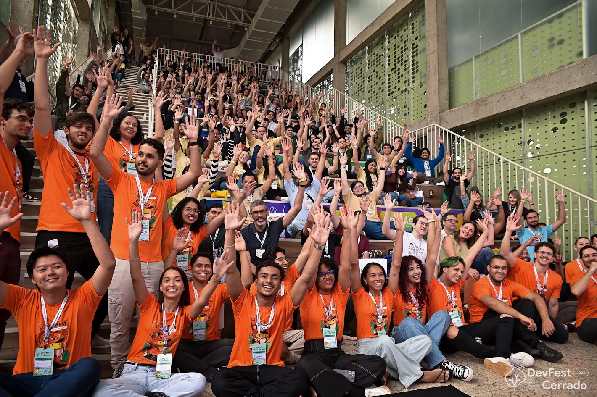

Sistema de Inteligência Jurídica & Automação Fluxo agêntico para análise de sentenças judiciais em escala. Automatiza a extração de dados não estruturados, executa cálculos financeiros de condenações e consolida os resultados em dashboards e planilhas para a diretoria.
Classificação de Imagens com Texto Manuscrito No CEIA/UFG, atuou na validação de dados de entrada com visão computacional, incluindo anotação de mais de 30 mil imagens para datasets de treinamento. Resultado: um mecanismo capaz de classificar imagens contendo textos manuscritos.
💻 📓 Guia prático de estudos (nível iniciante ao avançado) sobre Inteligência Artificial. Organiza trilhas de aprendizagem, canais, livros e roadmaps sobre Data Science, Machine Learning e Deep Learning (majoritariamente gratuitos e em PT-BR).

Acredito que tecnologia se constrói em comunidade — e que ela só é relevante quando é plural!